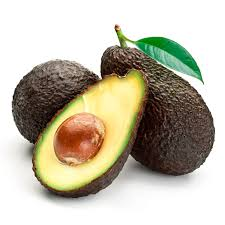
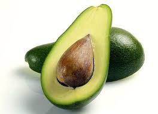
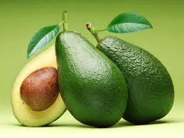
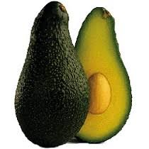
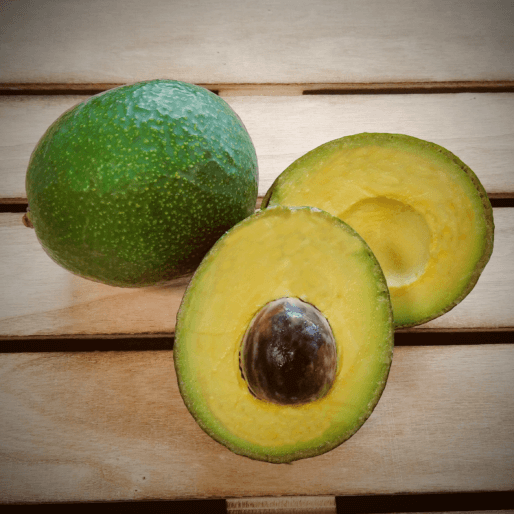
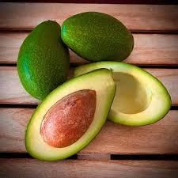

Inicio
Porque no todo en la vida es pizza... ¡también está el aguacate!Tipos de Aguacates
Hass
El más popular. Piel rugosa y oscura. Sabor cremoso y rico en grasas. Ideal para guacamole.
Fuerte
Piel lisa y verde. Forma de pera. Sabor ligero y menos graso. Versátil en cocina.
Bacon
Piel fina y verde brillante. Sabor suave y textura menos cremosa. Perfecto para ensaladas.
Pinkerton
Forma alargada y piel gruesa. Sabor cremoso como el Hass. Hueso pequeño, más carne.
Reed
Grande y redondo. Piel gruesa y verde. Sabor cremoso. Madura en verano. Ideal para untar.
Zutano
Piel amarilla-verdosa. Textura menos cremosa. Sabor ligero y acuoso. Versátil en preparaciones.
Datos Curiosos
- Los aguacates son bayas: Aunque no lo parezca, los aguacates son técnicamente una fruta y, más específicamente, ¡una baya!
- Los aguacates no maduran en el árbol: A diferencia de otras frutas, los aguacates solo comienzan a madurar después de ser cosechados. Por eso, a veces los compras duros como una piedra y, días después, están perfectos para tu guacamole.
- El guacamole tiene su día internacional: El 16 de septiembre se celebra el Día Internacional del Guacamole. ¡Una excusa perfecta para disfrutar de este delicioso dip!
- Los aguacates flotan en el agua: Debido a su alto contenido de grasa, los aguacates pueden flotar en el agua. ¡Un truco útil para saber si están maduros!
- El aguacate más pesado del mundo: El récord Guinness lo tiene un aguacate de 2.5 kg, cultivado en Hawaii. ¡Ese es un aguacate para compartir!
- Los aguacates son viejos como los dinosaurios: Los aguacates existen desde hace millones de años. De hecho, se cree que los grandes mamíferos de la prehistoria, como los perezosos gigantes, ayudaron a dispersar sus semillas.
Video: Todo sobre los aguacates
Transcripción del video
Para acceder a la transcripción completa del video, utilice el siguiente enlace:
Descargar transcripción (PDF)